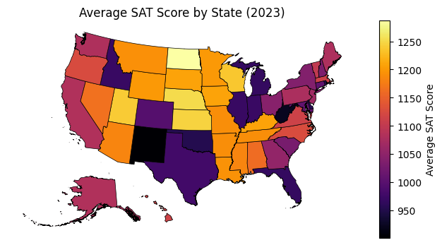
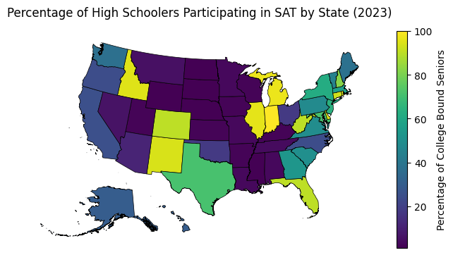
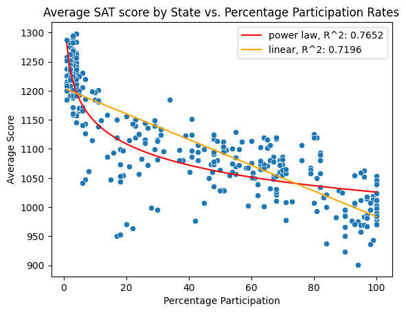
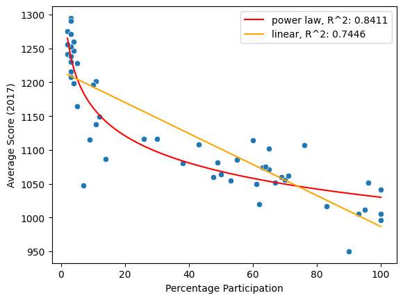
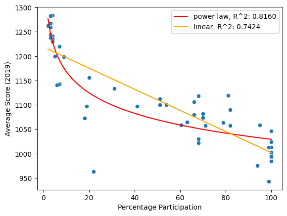
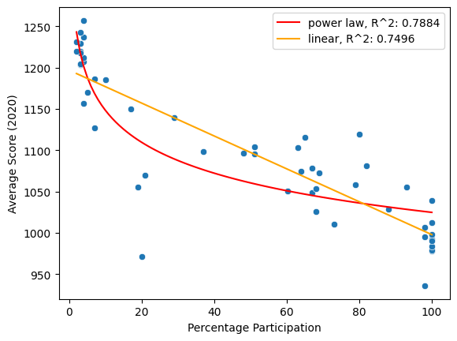
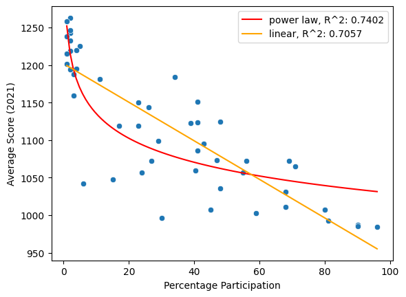
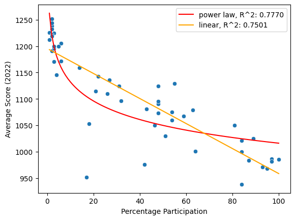

import pandas as pd
import seaborn as sns
import matplotlib.pyplot as plt
import sys
sys.path.insert(1, "../")import utils.us_map
import utils.anomaly as anomaly
import utils.scores as scores
states = utils.us_map.main("../data/cb_2018_us_state_500k")s1 = scores.SATScores("../data/sat/tabn226.40_17_18_19_20.xlsx")
s2 = scores.SATScores("../data/sat/tabn226.40_18_21_22_23.xlsx")
s2.df = s2.df.query("year!=2018")
sat_scores = scores.Scores()
sat_scores = sat_scores.merge(s1).merge(s2)
sat_scores.df.head()| location | year | percent | section | mean | test | |
|---|---|---|---|---|---|---|
| 0 | United States | 2017 | 47.605306 | total | 1060 | SAT |
| 1 | Alabama | 2017 | 5.000000 | total | 1165 | SAT |
| 2 | Alaska | 2017 | 38.000000 | total | 1080 | SAT |
| 3 | Arizona | 2017 | 30.000000 | total | 1116 | SAT |
| 4 | Arkansas | 2017 | 3.000000 | total | 1208 | SAT |
(states.merge(sat_scores.get_section("total").get_year(2023).df,
left_on="NAME",
right_on="location")
.plot(column="mean",
legend=True,
cmap="inferno",
edgecolor="black",
figsize=(8, 8),
lw=0.5,
legend_kwds={"label": "Average SAT Score", "shrink": 0.5}))
plt.axis("off")
plt.title("Average SAT Score by State (2023)")
plt.show()
demonstration_locals = ["Nebraska",
"Massachusetts", "Florida", "United States"]
sat_scores.plot(demonstration_locals, section="total")
plt.legend(loc="center left", bbox_to_anchor=(1, 0.5))
plt.ylabel("Average SAT Score")
plt.xticks(range(sat_scores.df["year"].min(), sat_scores.df["year"].max()+1))
plt.show()
(states.merge(sat_scores.get_section("total").get_year(2023).df,
left_on="NAME",
right_on="location")
.plot(column="percent",
legend=True,
edgecolor="black",
figsize=(8, 8),
lw=0.5,
legend_kwds={"label": "Percentage of College Bound Seniors", "shrink": 0.5}))
plt.axis("off")
plt.title("Percentage of High Schoolers Participating in SAT by State (2023)")
plt.show()
scores = sat_scores.get_section("total").df
anomaly.anomaly(scores, separate_years=False)
plt.title("Average SAT score by State vs. Percentage Participation Rates")
sat_corrected_scores = anomaly.anomaly(
scores, separate_years=True, suppress=True)
plaw_scores = sat_corrected_scores.assign(
anom_c=sat_corrected_scores["mean"]-sat_corrected_scores["plaw_pred"])
(states.merge(plaw_scores.query("year==2023"),
left_on="NAME",
right_on="location")
.plot(column="anom_c",
legend=True,
cmap="inferno",
edgecolor="black",
figsize=(8, 8),
lw=0.5,
legend_kwds={"label": "Percentage Corrected SAT Performance", "shrink": 0.5}))
plt.axis("off")
plt.title("SAT Performance by State Corrected for Percentage Participation (2023)")
plt.show()
sns.lineplot(data=plaw_scores.query("location in @demonstration_locals"),
x="year",
y="anom_c",
hue="location",
marker="o")
plt.legend(loc="center left", bbox_to_anchor=(1, 0.5))
plt.ylabel("SAT Performance Corrected for Percentage Participation")
plt.xticks(range(sat_scores.df["year"].min(), sat_scores.df["year"].max()+1))
plt.show()
rankings = plaw_scores.pivot_table(index="location", columns="year", values="anom_c").sort_values(
2023, ascending=False).reset_index()
rankings.columns.name = "2023 Rankings"
rankings.index = rankings.index + 1
rankings.round(1)| 2023 Rankings | location | 2017 | 2018 | 2019 | 2020 | 2021 | 2022 | 2023 |
|---|---|---|---|---|---|---|---|---|
| 1 | Massachusetts | 62.1 | 72.9 | 78.6 | 82.9 | 106.1 | 83.9 | 85.6 |
| 2 | Virginia | 48.5 | 55.8 | 67.5 | 69.2 | 81.6 | 72.2 | 78.8 |
| 3 | Arizona | 18.8 | 38.9 | 36.0 | 49.7 | 50.1 | 44.2 | 68.9 |
| 4 | Vermont | 56.0 | 55.4 | 52.8 | 54.6 | 54.6 | 43.2 | 60.4 |
| 5 | North Carolina | 11.7 | 21.6 | 31.7 | 33.4 | 54.0 | 55.2 | 55.4 |
| 6 | Hawaii | 22.2 | 26.9 | 35.1 | 35.6 | 53.7 | 50.2 | 54.2 |
| 7 | Oregon | 31.3 | 36.1 | 43.7 | 44.6 | 8.8 | 51.7 | 53.4 |
| 8 | New Jersey | 6.5 | 43.3 | 49.3 | 46.2 | 62.7 | 40.6 | 45.5 |
| 9 | Pennsylvania | 17.5 | 26.4 | 32.2 | 32.8 | 51.3 | 39.2 | 42.8 |
| 10 | Montana | 33.6 | 23.6 | 23.5 | 36.9 | 55.6 | 45.7 | 34.3 |
| 11 | Maine | -20.8 | -27.3 | -17.0 | -30.8 | 13.7 | 23.7 | 32.6 |
| 12 | Washington | 20.6 | 20.6 | 24.2 | 29.3 | -16.6 | 23.8 | 32.3 |
| 13 | Kansas | 40.3 | 32.3 | 11.8 | 35.8 | 27.2 | 16.0 | 32.2 |
| 14 | North Dakota | -9.0 | 4.3 | -14.1 | -12.0 | 5.9 | -50.6 | 31.6 |
| 15 | New Hampshire | 19.8 | 21.0 | 26.7 | 26.6 | 20.2 | 23.8 | 27.0 |
| 16 | Utah | -0.3 | -2.7 | 0.8 | -14.4 | -14.1 | 11.0 | 26.2 |
| 17 | Georgia | -7.1 | 4.4 | 9.0 | 8.6 | 16.6 | 14.0 | 23.9 |
| 18 | Wisconsin | 52.7 | 42.4 | 34.1 | 24.6 | -37.1 | 30.0 | 23.2 |
| 19 | Alaska | -3.7 | 18.8 | 15.8 | 21.7 | 23.0 | 27.3 | 22.2 |
| 20 | Tennessee | 22.5 | 24.5 | 28.1 | 17.5 | 39.5 | 29.7 | 19.4 |
| 21 | Nevada | 10.5 | 16.2 | 31.1 | 31.6 | 14.5 | 11.7 | 17.8 |
| 22 | New York | 0.1 | 15.2 | 21.2 | 21.3 | 0.9 | 25.3 | 16.9 |
| 23 | California | -9.9 | 7.8 | 9.1 | 3.8 | -37.0 | 21.3 | 13.6 |
| 24 | Minnesota | 56.7 | 65.3 | 54.8 | 55.8 | 47.2 | 26.2 | 12.5 |
| 25 | Louisiana | -21.7 | -22.7 | -14.2 | -18.0 | -7.0 | -27.8 | 5.5 |
| 26 | Connecticut | 11.0 | 13.2 | 16.6 | 14.2 | 26.0 | 3.4 | 5.3 |
| 27 | Missouri | 32.7 | 29.3 | 6.8 | 10.8 | 3.2 | 1.2 | 2.5 |
| 28 | Nebraska | 14.7 | 0.4 | 11.1 | 10.6 | 30.2 | 0.0 | -3.4 |
| 29 | United States | -10.9 | -1.8 | 0.6 | 0.2 | -10.2 | -3.5 | -3.9 |
| 30 | Kentucky | 27.3 | 15.3 | 2.8 | 5.8 | 3.2 | -3.0 | -4.8 |
| 31 | Iowa | 10.0 | 13.4 | -4.9 | 1.6 | 27.2 | -2.8 | -4.8 |
| 32 | South Carolina | -4.2 | -3.2 | -21.5 | -18.4 | -26.3 | -18.8 | -5.1 |
| 33 | Maryland | 9.8 | 25.0 | 17.3 | -2.2 | 9.8 | 29.0 | -7.2 |
| 34 | Colorado | 44.4 | -14.8 | -5.4 | -12.8 | 16.7 | -3.4 | -7.3 |
| 35 | Arkansas | -30.3 | -49.2 | -61.1 | -44.2 | -21.8 | -31.0 | -20.8 |
| 36 | Indiana | 18.7 | 24.0 | 26.8 | 26.4 | 27.8 | 21.2 | -27.1 |
| 37 | Alabama | -40.5 | -40.5 | -48.9 | -41.5 | -36.0 | -36.7 | -27.5 |
| 38 | District of Columbia | -85.7 | -67.4 | -57.9 | -45.8 | -47.3 | -31.0 | -29.1 |
| 39 | Illinois | -53.9 | -21.3 | -16.4 | -18.8 | -32.5 | -36.5 | -30.1 |
| 40 | Idaho | -28.9 | -38.8 | -36.4 | -40.8 | -49.3 | -31.5 | -30.6 |
| 41 | Michigan | -25.0 | -28.8 | -26.4 | -26.8 | -15.7 | -24.4 | -32.6 |
| 42 | Texas | -36.2 | -30.9 | -29.5 | -30.8 | -50.0 | -36.7 | -37.2 |
| 43 | Florida | -23.1 | -27.5 | -30.4 | -32.8 | -45.9 | -39.7 | -37.3 |
| 44 | Rhode Island | 13.3 | -23.5 | -34.4 | -34.8 | -35.7 | -48.5 | -42.6 |
| 45 | Delaware | -34.0 | -41.8 | -44.4 | -46.8 | -47.4 | -50.5 | -42.6 |
| 46 | Ohio | -2.3 | -39.4 | -31.1 | -36.8 | -68.1 | -48.7 | -43.1 |
| 47 | South Dakota | -22.3 | -10.6 | 19.1 | -0.4 | -37.1 | -3.0 | -47.4 |
| 48 | Wyoming | -8.3 | 5.4 | -10.9 | -23.0 | 17.2 | 22.0 | -55.4 |
| 49 | Mississippi | -23.0 | -15.6 | -11.9 | -15.4 | -50.1 | -36.6 | -71.4 |
| 50 | West Virginia | -56.0 | -113.2 | -87.0 | -89.8 | -58.2 | -86.4 | -80.3 |
| 51 | New Mexico | -18.6 | -52.6 | -58.4 | -57.3 | -87.7 | -82.5 | -100.2 |
| 52 | Oklahoma | -137.4 | -126.3 | -156.0 | -138.5 | -118.4 | -153.6 | -134.1 |
anomaly.anomaly(scores, separate_years=True)| location | year | percent | section | mean | test | lin_pred | plaw_pred | |
|---|---|---|---|---|---|---|---|---|
| 0 | United States | 2017 | 47.605306 | total | 1060 | SAT | 1106.840206 | 1070.928065 |
| 1 | Alabama | 2017 | 5.000000 | total | 1165 | SAT | 1204.540651 | 1205.521462 |
| 2 | Alaska | 2017 | 38.000000 | total | 1080 | SAT | 1128.866633 | 1083.682185 |
| 3 | Arizona | 2017 | 30.000000 | total | 1116 | SAT | 1147.211849 | 1097.223848 |
| 4 | Arkansas | 2017 | 3.000000 | total | 1208 | SAT | 1209.126956 | 1238.310733 |
| ... | ... | ... | ... | ... | ... | ... | ... | ... |
| 203 | Virginia | 2023 | 49.000000 | total | 1113 | SAT | 1072.866587 | 1034.173581 |
| 204 | Washington | 2023 | 37.000000 | total | 1081 | SAT | 1103.040438 | 1048.744977 |
| 205 | West Virginia | 2023 | 90.000000 | total | 923 | SAT | 969.772593 | 1003.324616 |
| 206 | Wisconsin | 2023 | 2.000000 | total | 1236 | SAT | 1191.047506 | 1212.793461 |
| 207 | Wyoming | 2023 | 1.000000 | total | 1200 | SAT | 1193.561994 | 1255.396588 |
364 rows × 8 columns





